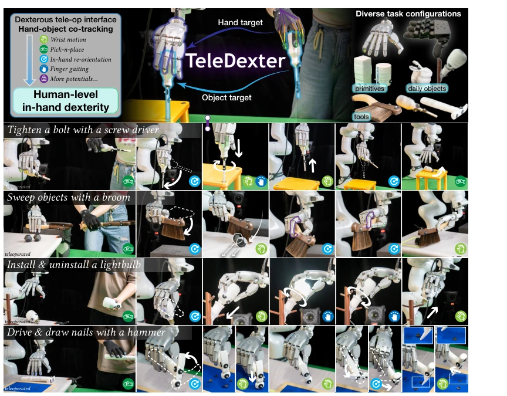
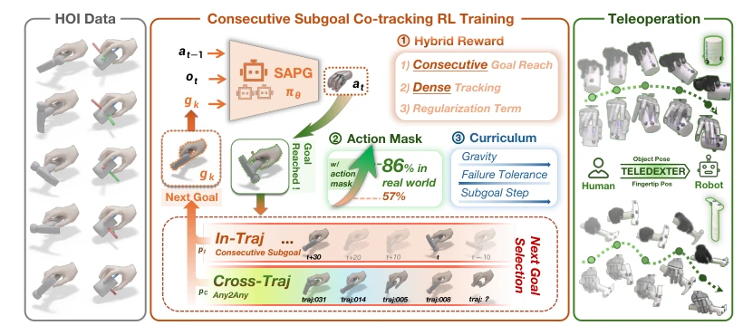
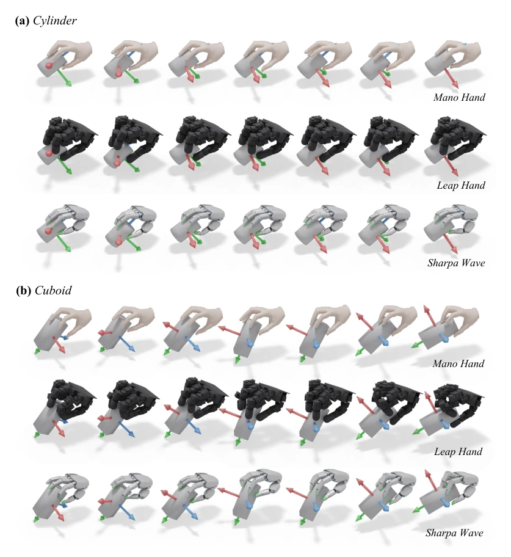
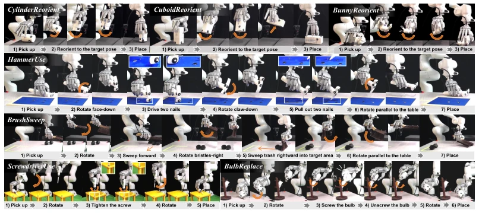
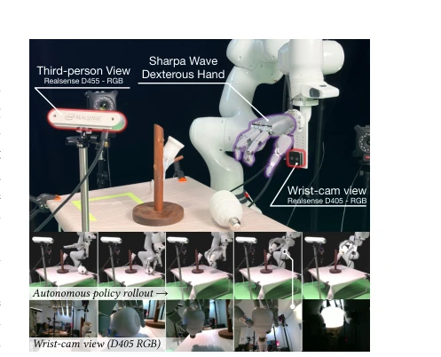
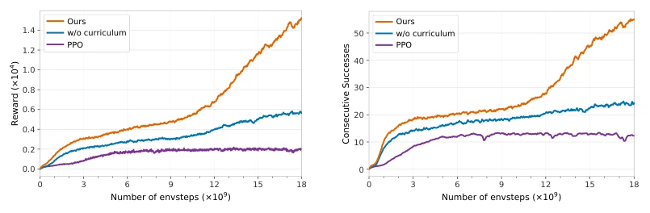
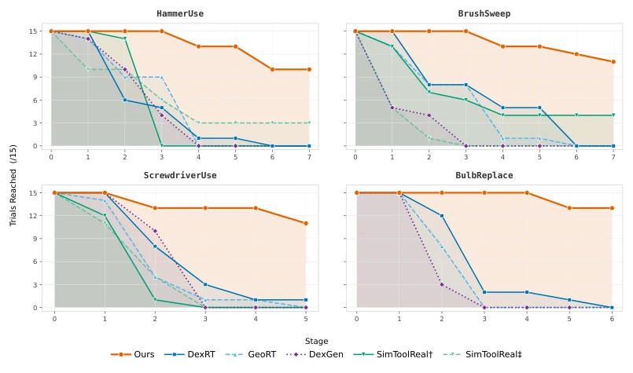
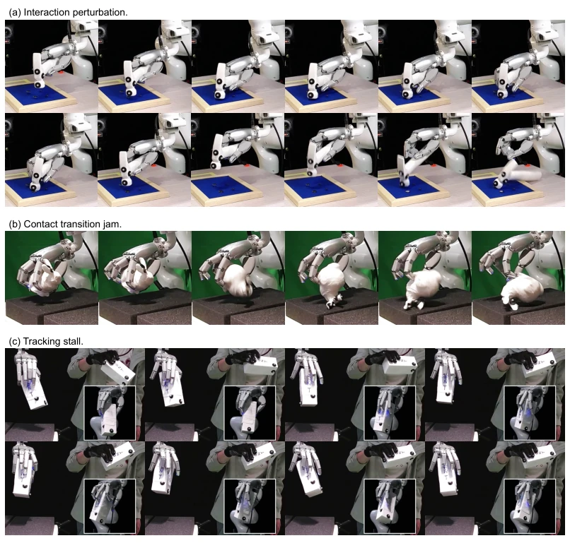
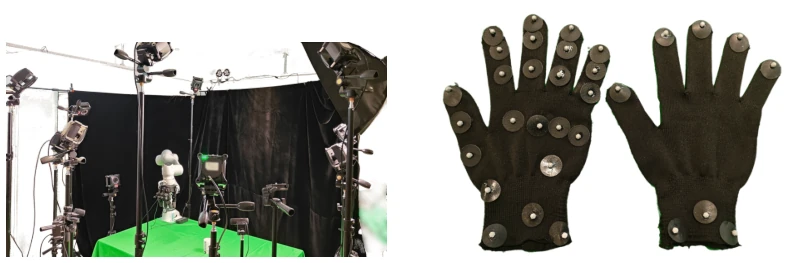

This paper essentially pushes dexterous manipulation from "seeing" to "touching". TELEDEXTER implements hand-object co-tracking, converting human intent into low-level contact execution, which is indeed much more reliable than pure kinematic remapping. A 75% success rate on long-horizon tool use is quite impressive, especially for screwdriver and light bulb tasks, where baselines fail completely. However, do not be too optimistic yet; it still relies on a motion capture system, and each object requires separate training, falling short of true "general dexterity". Claiming to move towards human-level, it is actually more like moving towards a "perfect replication of human operators," and generalization remains to be seen.
Existing dexterous teleoperation mainly divides into two schools: one is kinematic remapping (e.g., [5, 6, 12]), intuitive but lacking physical understanding, losing grip upon acceleration; the other is generative action priors (e.g., [13]), prone to accumulating errors leading to drift. Humans can seamlessly switch between grasping, rotating, and tool use, but robots either cannot grasp or cannot rotate. Teleoperation should bridge this gap, but existing systems cannot handle dynamic contact and long-horizon tasks. TELEDEXTER attempts to solve contact force and object inertia issues through hand-object co-tracking, teaching robots "how to move" rather than "how to follow".

Fig. 1: TELEDEXTER learns diverse dexterous in-hand manipulation skills within a single-stage framework, marking a concrete step towards human-level dexterous teleoperation.
The overall process is: first collect human hand-object interaction data via motion capture, generate robot reference trajectories through geometric perception remapping, then train a single-stage RL controller. There are three core innovations: 1. Continuous subgoal co-tracking: not imitating every frame, but allowing the policy to freely explore contact strategies between subgoals, combined with mixed rewards (sparse subgoals + dense tracking), avoiding trajectory overfitting. 2. Geometric perception remapping: two-stage optimization, considering object meshes to prevent penetration, generating physically feasible hand-object target sequences. 3. Random action masking: randomly freezing partial joint actions in simulation, forcing the policy to adapt to real-world dynamics differences, achieving zero-shot Sim-to-Real. Training uses the SAPG optimizer, parallel accelerated in Isaac Gym, requiring no task-specific reward engineering, and gradually increasing gravity and target accuracy difficulty through curriculum learning.

Fig. 2: Method overview of TELEDEXTER. Given human hand-object reference motions, we train a co- tracking controller via single-stage RL and deploy it zero-shot to real-world dexterous teleoperation.

Fig. 9: Hand–object reference motion visualization. Retargeted motion clips for (a) Cylinder and (b) Cuboid. Each clip shows the source MANO hand and the corresponding retargeted LeapHand and SharpaWave sequences. Coordinate axes indicate the object 6-D pose.
Tested on 7 tasks (remapping + tool use) on Franka manipulator + dexterous hand (LeapHand/SharpaWave). Baselines include DexRT [5, 6], GeoRT [12], DexGen [13], etc. TELEDEXTER average success rate 75.2%, baselines generally below 10%. Tool tasks like screwdriver tightening and bulb replacement performed best, while baselines failed at the remapping stage. Ablation shows that removing random action masking causes a drastic drop in real-world performance, proving its criticality for Sim-to-Real. Additionally, collected data successfully trained autonomous policies (Behavioral Cloning), achieving 46.7% success rate on tasks like BulbInstall, validating the value of data collection.

Fig. 3: Task descriptions. Seven dexterous tasks across two categories: three reorientation tasks over diverse geometries and four long-horizon tool-use tasks. Each task is decomposed into well-defined stages.

Fig. 4: Autonomous policy setup and rollout.

Fig. 5: Training-recipe ablation curves on Hammer. (a) Reward and (b) consecutive subgoals reached vs. environment steps for the full method, without curriculum, and with PPO replacing SAPG.

Fig. 6: Stage-wise success on four long-horizon tool-use tasks. For each task, the horizontal axis indexes the task stage and the vertical axis is the number of trials (out of 15) that reach that stage. Each curve corresponds to one method (TELEDEXTER and baselines from Tab. 1 in the main paper). SimToolReal is not a teleoperation method but is included as a strong baseline for learned tool manipulation.
其他图片Other Figures

Fig. 7: Real-world failure cases. Each panel shows a snapshot at the point of failure together with the repre- sentative failure mode: (a) interaction perturbation, (b) contact transition jam, (c) tracking stall.

Fig. 8: Hand–object motion capture setup. (a) The dedicated capture volume equipped with tripod-mounted NOKOV infrared cameras. (b) Two glove configurations: the left glove, used for offline reference-motion collection, has dense markers on the wrist, palm, and all finger joints; the right glove, used for real-time teleoperation, has markers only on the wrist and fingertips.